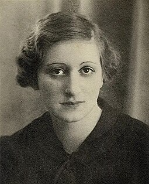

Histoire
A l'époque de la Préhistoire et de l'Antiquité
L'histoire de Cannes, à l'origine, modeste village méditerranéen de pêcheurs et de moines, est indissociable de celle des îles de Lérins, l'île Sainte-Marguerite et l'île Saint-Honorat, à quelques coups de rames de la côte. Apparue seulement au Moyen Âge, la modeste bourgade de la Provence orientale se développe très modestement durant l'Ancien Régime, tout en étant témoin des luttes franco-anglaises et franco-espagnoles qui s'exercent essentiellement sur les îles de Lérins. Ce n'est qu'au xixe siècle que la ville prend véritablement son essor, grâce notamment à lord Henry Brougham and Vaux, grand Chancelier d’Angleterre, qui en s'installant, attire l'aristocratie anglaise et européenne qui édifie de magnifiques demeures secondaires pour l'hiver. Comme la plupart des stations du littoral de la Côte d'Azur et de la Riviera, la ville connaît, grâce à cette population de prestige, un développement sans précédent. Son statut de renommée internationale n'est acquis qu'au milieu du xxe siècle par le Festival du film. Cannes devient rapidement une ville sur-médiatisée. Elle exerce encore aujourd'hui le même pouvoir d’attraction sur une clientèle française et étrangère fascinée par son aura de ville de stars. De cette intense activité touristique, les secteurs ultra développés de l’hôtellerie, de la restauration et des commerces de luxe offrent, entre mer et soleil, une prestigieuse vitrine du luxe français.
Le premier texte mentionnant l'occupation celtique dans la Gaule Transalpine date du iie siècle av. J.-C., il mentionne que les Helvètes (tribus de celtes) seraient descendus de l'actuelle Allemagne avec les Cimbres (peuple nordique) pour aller, de -113 à -101, envahir la Gaule Transalpine, aussi appelée Gaule Narbonnaise, (Toulouse-Genève) qui était à l'époque sous domination romaine. En -107, les Romains tentent d'anéantir les Tigurins (une tribu helvétique), mais les Tigurins remportent la victoire à Agen (Italie) en tuant leur consul Lucius Cassius. Finalement les Helvètes sont vaincus en -101, date de leur départ pour l'actuelle Suisse. Aujourd'hui les vestiges de leur passage sont enfouis dans le sol.

L'origine de la ville est le piton du Suquet, un excellent promontoire pour surveiller les environs et un site défensif naturel efficace pour répondre aux attaques. La théorie selon laquelle Cannes était l’Aegitna évoquée par Polybe est aujourd'hui totalement écartée. D'après la tradition locale, les premiers hommes à avoir occupé le site semblent être les Ligures. Ils sont censés avoir bâti un oppidum au sommet de la colline. Aucun vestige archéologique n'a cependant jamais été découvert sur le site venant attester cette légende. La première évocation de Cannes dans les textes remonte au xie siècle. Elle renvoie à un castrum marcellini (château de Marcelin). Si le terme n'est pas clair, il ne renvoie en aucun cas à un « château des Marseillais » ou à une place forte des Grecs de Marseille, comme l'ont affirmé certains érudits locaux de façon abusive.

Ce sont les îles de Lérins qui ont intéressé plus particulièrement les auteurs antiques. Ce minuscule archipel au carrefour des routes maritimes offrait quelques atouts remarquables. Pour les navigateurs à voiles en provenance de l’ouest, les îles constituaient un mouillage sûr avant Antipolis (Antibes), la seule véritable ville de la région après Fréjus. Il semble que l'île Sainte-Marguerite soit occupée avant le iie siècle av. J.-C., comme le montre la présence de quelques amphores massaliètes, mais il est difficile de caractériser et de dater précisément cette occupation protohistorique. Les sources évoquent une occupation dès le Néolithique, mais celle-ci n'est pas démontrée à ce jour. Des fouilles archéologiques dans le fort royal ont mis en évidence un véritable habitat urbanisé pourvu d'un cryptoportique remontant à l'époque républicaine (iie siècle av. J.-C.-début du ier siècle av. J.-C.) et probablement abandonné à l'époque tibérienne (deuxième quart du ier siècle apr. J.-C.). Les découvertes sous-marines et dans le secteur de l'étang du Batéguier permettent de définir une occupation jusque durant l'Antiquité tardive, au plus tôt. Les traces archéologiques vont dans le sens des textes des auteurs antiques comme Strabon ou bien encore Pline l'Ancien. L'archipel est évoqué comme une étape importante dans les circuits maritimes de l’époque. Strabon, voyageur et géographe grec, évoque le nom de la plus grande des îles sous le nom de Lero (d’où les îles de Lérins). Il fait mention d'un sanctuaire où on vouait un culte à un demi-dieu que les Grecs nommaient Heros et dont l'appellation la plus connue est Héraclès ou Hercule. L'auteur romain Pline l'Ancien mentionne aussi dans ses écrits le nom des deux îles et ainsi que celui de la fortification sur la falaise : « Lero et Lerina (la plus petite) en face d’Antipolis (Antibes) où l’on se souvient de l’oppidum de « Vergoanum ». L'archéologie, les textes antiques ainsi que le nom du lieu (« Ler » – de Lero et dans « Verg » – de Vergoanum des racines gauloise) témoignent de l'importance accordée par les communautés ligures à ce site. Cette colonie maritime, doublée d’un lieu de culte réputé était probablement très animée. Cette position géostratégique suscita l'intérêt des Romains qui, dès l’époque républicaine, s'emparèrent de l'île et fortifièrent l'agglomération qui se trouve actuellement sous le fort royal. Il est fort probable que les Romains ont construit des remparts flanqués de tours à l’ouest de l’île. On peut encore admirer quelques vestiges en suivant le parcours historique.
Un des sites antiques les plus importants de la commune de Cannes est sans conteste celui de Saint-Cassien. De nombreuses découvertes se sont succédé depuis le xixe siècle sur la butte de Saint-Cassien, dans le secteur de l'aérodrome et des terrains de sports situés sur le territoire partagé entre les communes de Cannes et de Mandelieu. Les traces d'occupation les plus anciennes remontent au premier Âge du fer. Elles furent mises au jour dans les années 1970, sur les pentes de la butte et au pied de cette dernière lors de l'installation de citernes. Il s'agit d'un grand nombre de céramiques modelées de belle facture appartenant à un faciès culturel provençal, associées à quelques rares céramiques importées (amphores massaliètes et puniques) remontant au ve siècle av. J.-C.. Elles ne sont liées à aucune structure conservée, mais on devine un habitat de plein air au pied de la butte. Sous les terrains de sport, à l'ouest de l'aérodrome, les traces d'une agglomération antique ont été mises au jour. L'élément architectural le plus spectaculaire est un vaste entrepôt de 1 000 m2 qui semble avoir été édifié dans le courant du ier siècle apr. J.-C. Le site semble occupé jusqu'au vie siècle et a livré d'importantes quantités d'objets qui montrent la vitalité du site jusqu'à cette époque au plus tôt. Au pied de la butte, on a découvert une importante nécropole d'époque romaine avec des sépultures datant du ier siècle au ive siècle apr. J.-C. On peut rapprocher ces découvertes de la petite agglomération de Ad Horrea à mi-chemin entre Forum Iulii (Fréjus) et Antipolis (Antibes) sur la Table de Peutinger. La présence d'une petite ville bien reliée au réseau de communications antiques à cet emplacement explique la présence d'une communauté de moines venant des quatre coins de l'empire sur les îles de Lérins.
L'ensemble du littoral est fortement occupé à l'époque romaine, notamment autour de la via Julia Augusta construite durant la période augustéenne qui longe la côte depuis l'Italie jusqu'au Var en passant par Antibes et Saint-Cassien notamment. Quelques traces d'occupation antiques ont été identifiées sur le territoire de la commune de Cannes. Au centre-ville, rue de la République, les travaux de percement de la pénétrante ont permis la mise au jour d'un atelier de céramique antique qui semble avoir fonctionné entre la fin du ier siècle av. J.-C. et le milieu du ier siècle apr. J.-C. Il a produit de la vaisselle de table dans un premier temps, puis des amphores4 destinées à conditionner la production viticole locale. Sous la chapelle Saint-Nicolas, des fouilles anciennes ont permis la découverte de lampes à huile de l'Antiquité tardive qui laissent entendre la présence de sépultures de cette période.

Durant la Pax Romana, l’Église chrétienne étend son évangélisation en Europe. On assiste à l'apparition et l'organisation d'évêchés ainsi qu'au développement de monastères. La plus petite île de l'archipel (l'île Saint-Honorat), appelée aussi Planasia (l’île plate), voit la fondation du monastère de Lérins par le moine Honorat venant de la grotte du Cap Roux. En compagnie de son ami Macaire, il choisit la vie d'ermite, mais je mais son aura est telle que de nombreux anachorètes, de tous les coins de l'Occident, vinrent le rejoindre et ce, durant près de deux siècles. Il y bâtit sept chapelles entourées de quelques cellules. En 426, Saint Honorat dut accepter l'archevêché d'Arles et mourut en 429. L’abbaye devint un centre spirituel chrétien qui forma de nombreux prélats partis évangéliser l'Occident chrétien, administrer l'Église naissante, dont certains deviendront des saints (selon certains chroniqueurs saint Patrick, saint Loup, saint Vincent de Lérins, saint Salvien, saint Césaire). Le poète chrétien Sidoine Apollinaire dira de cette île : « Cette île plate d’où tant de sommets avaient atteint le ciel ».
Au Moyen-Âge
À la fin de l'Antiquité tardive, l'Empire romain se désagrège progressivement. La Provence, éloignée du théâtre des opérations des invasions barbares, en subit peu les conséquences. Elle passe sous la domination relativement théorique des Wisigoths, de l'Empire byzantin, des Francs et connaît une certaine prospérité entre le ve siècle et le viie siècle que l'on note par l'éclosion de grands monastères, comme celui de Lérins. Elle entretient aussi des liens commerciaux intenses avec l'ensemble de la Méditerranée, notamment l'Italie, l'Afrique du Nord, la mer Égée, la Syrie, comme le montrent les découvertes faites à Saint-Cassien. La plupart des moines de Lérins sont originaires de la Méditerranée orientale. Ils arrivent par des voies maritimes régulières. Ils s'installent à Lérins, à proximité d'une voie romaine encore fréquentée (la via Julia Augusta) et d'un petit centre urbain prospère, Ad Horrea. Le mobilier le plus récent mis au jour sous le stade de Saint-Cassien date du viie siècle. Il s'agit de céramiques sigillées produites en Afrique du Nord (dans l'actuelle Tunisie) et dans la région de Phocée (en Turquie). Au début du viie siècle, les moines investissent la butte de Saint-Cassien. D'après la tradition lérinienne, saint Nazaire y édifie un couvent dédié à saint Étienne après y avoir détruit un temple païen. Ce couvent devient le centre d'une agglomération liée au monastère de Saint-Honorat et qui se substitue à ad Horrea, le castrum Arluc. Arluc semble prospérer jusqu'au xie siècle malgré un incendie du couvent au viiie siècle et la mise à sac par les Sarrazins au xe siècle, après la reprise en main de la Provence par Guillaume le libérateur qui, sous le prétexte de chasser les Sarrasins du Fraxinet, en profite pour imposer le pouvoir féodal auquel les populations et la noblesse locale s'étaient toujours opposés. Arluc possédait un port important, débouché du commerce grassois. Au xixe siècle, des murs étaient encore visibles près de la tour de contrôle de l'aérogare. L'ensablement progressif de la rade va déplacer le littoral de plus d'un kilomètre. La disparition du port va permettre le développement d'un concurrent à Arluc en privilégiant le très modeste castrum du Suquet et son extension, Cannes. Au xiiie siècle le village d'Arluc semble avoir disparu. Il ne subsiste plus que la chapelle Saint-Cassien qui sera détruite au xive siècle, reconstruite et à nouveau incendiée durant la guerre de Succession d'Autriche. Le bâtiment actuel date du xviiie siècle.

Dès l'Antiquité des peuplades ligures occupent le site, qui constitue une position stratégique, pour y installer un oppidum dominant à la fois la baie et l'intérieur des terres. Culminant à 66 m, c'est ce lieu élevé de peuplement originel qui donnera son nom à la commune, le terme ligure Canoa signifiant « hauteur » ou « piton ». Au Moyen Âge, le pouvoir des comtes de Provence s'appuie sur les fortifications qui servent autant à se garantir d'attaques venues de la mer qu'à montrer sa puissance aux populations et à la noblesse locale, peu enclines à accepter l'ordre féodal. Parmi ces places fortes, se trouve, au sommet de la colline du Suquet, un Castellum Marcellini (« château de Marcellin »). Guillaume Ier le Libérateur, après sa reprise en main du comté de Provence, donne, en 960, ce qui n'était encore qu'un très modeste castrum à Rodoard, chef d'une branche de la puissante famille de la maison de Grasse, avec le fief d’Antibes dont Cannes fait partie, en récompense de sa fidélité. Vers l’an 1030, Guillaume-Gruette, fils aîné de Rodoard, entre dans les ordres et cède une partie de ses terres à l’abbaye de Lérins. L'acte de donation est en même temps l'acte de création du territoire qui deviendra la commune de Cannes. Il fait mention d'un château sur la colline du Suquet, au centre d'une nouvelle agglomération qui se développe. L'acte de 1030 fait encore référence à un port qui n’était en réalité qu’une plage. On peut lire : De Portu Canue, forme la plus authentique, provenant du mot ligure Canoa signifiant « hauteur » ou « piton » et se rapportant au lieu antique d’occupation humaine sur la colline du Suquet. Vers 1080, l'abbé de Lérins Aldebert II entreprend la construction de la grande tour du Suquet pour mettre le site à l'abri des attaques des corsaires et des sarrasins. En 1131, la donation est confirmée par le comte de Provence, acte que le pape scellera lui-même. « Le Comte déclare notre cité libre et exempte de toutes charges. Elle est devenue une terre « franche ». Cela veut dire qu’elle n’a pas à payer les taxes ni les impôts comtaux… elle paiera les autres. ». Un système de signalisation par des feux entre la tour du monastère fortifié de l'abbaye de Lérins et celle du Suquet est installé en 1327. La tour du Suquet n'est terminée que trois siècles plus tard en 1365 par l'abbé Jean de Thornafort. Avec ses vingt deux mètres de hauteur elle permet de surveiller la rade de Cannes. En 1178, le Castellum Marcellini prend l'appellation de Castellum Francum (château franc). On voit se développer un véritable habitat féodal avec un château, des maisons, un hôpital, des églises dont Notre-Dame-du-Puy qui, après la construction de Notre-Dame-d’Espérance, deviendra la chapelle Sainte-Anne. Ce site constitue dès lors un castrum, c’est-à-dire un village fortifié, groupé autour du château (aujourd'hui musée de la Castre). On observe un bâti serré autour du château et de l’église, sur la crête et le long des pentes à l’est et au nord surtout, à l’abri des remparts : les bàrri. Une seule source d'eau douce coule au pied du Suquet. Les activités du village sont l’agriculture (blé, olivier) et la pêche, strictement règlementée. Le dynamisme commercial est étroitement lié à l'activité portuaire et à la riche et commerçante ville de Grasse qui y exporte ses tissus et ses cuirs.
Aux xive et xve siècles, Cannes est touchée par les grands fléaux que sont les épidémies de peste, les guerres et les mauvaises conditions climatiques. En 1520, la peste fait disparaître la moitié de sa population. Cannes est aussi affectée par les conflits entre les seigneurs locaux et les guerres entre les royaumes. Lorsque Cannes passe sous l’autorité de la dynastie des comtes Catalans elle connaît une période de paix et d’expansion. Peu après, les Angevins, branche cadette des rois de France, récupèrent la Provence et Cannes se retrouve au milieu du conflit (des pirates aragonais viennent tirer des bordées le long des rivages) qui oppose les Angevins, comtes de Provence et rois de Naples, au royaume d'Aragon. Après une série de guerres pour la succession de la reine Jeanne, le Comté de Nice devient possession du duc de Savoie en 1388. À partir de ce moment le fleuve Var devient une frontière naturelle et Cannes une ville frontière exposée aux conflits terrestres et maritimes entre les puissants. En 1481 la Provence est intégrée au royaume de France.
Période Moderne
Durant l'Ancien Régime, Cannes continue de souffrir des conflits entre les puissances monarchiques et impériales européennes : guerres entre François Ier et Charles Quint, le duc de Savoie lors de la « guerre de Trente Ans », le prince Eugène et le roi Victor-Amédée II de Sardaigne au xviie siècle, la guerre de succession d’Autriche au xviiie siècle, le maréchal Brown et ses Croates. Les Anglais en profitent pour occuper les îles mais ils y restent peu de temps : le chevalier de Belle-Isle rétablit l'ordre en les chassant. La ville est également exposée aux rafles des pirates et corsaires de toutes nationalités qui vendent leurs prises sur les marchés aux esclaves. En 1635, les Espagnols prennent possession des îles de Lérins. Ils y édifient une fortification et s'y installent. Une bataille éclate sur les îles entre Français et Espagnols et la flotte française chasse les occupants par la force des canons. À cette occasion on emploie, pour la première fois, des bateaux à fond plat capables de transporter les chevaux. Ce sont les ancêtres des barges de débarquement. Vauban fait fortifier l'île Sainte-Marguerite grâce à son système de défense moderne et efficace. Le fort devient une prison d’État utilisée par tous les régimes. Plusieurs « illustres » prisonniers y séjournent : en 1687, le mystérieux masque de fer (il y resta onze ans) ; en 1689, six pasteurs protestants y meurent ; en 1772, on y enferme Claude Jouffroy d’Abbans, l’inventeur du bateau à roues à aubes ; en 1758, le comte de Monteil qui au bout de 32 ans refusa sa libération en prétextant qu'il s’y trouvait bien. À la fin de l’Ancien Régime, en 1777, Louis XVI accorde au Cannet de se séparer de la ville de Cannes. À la même époque, les hivers rigoureux et le prix élevé du pain entraînent la colère des villageois qui deviennent menaçants. Lors de la guerre d’indépendance des États-Unis soixante-treize marins cannois sous les ordres de l’amiral de Grasse aident les Américains à recouvrer leur liberté. Certains le payent de leur vie. Le poids des impôts et les inégalités devant la justice mécontentent fortement la population. Le commerce maritime favorise la vie économique du village, mais la mer, qui déborde de son lit, menace les demeures des habitants : le port de Cannes se limite à une petite anse découpée dans les rochers au pied des remparts de la ville. Les bateaux ne peuvent accoster qu'à la Carenco dei Catalans qui se trouve au milieu de l'actuel quai Saint-Pierre, construit entre 1838 et 1841.

La période révolutionnaire commence au début de l'année 1789 par la rédaction des cahiers de doléances. À Cannes cette rédaction se fait par la réunion de la communauté dans la chapelle Notre-Dame-de-la-Miséricorde. La nouvelle de la prise de la Bastille est accueillie favorablement, cet événement annonçant la fin de l’arbitraire royal et, peut-être, des changements plus profonds dans l’organisation de la France. Immédiatement après l’arrivée de la nouvelle, un grand phénomène de peur collective s’empare de la France. Des rumeurs de troupes de plusieurs milliers d’hommes en armes, soldés par les aristocrates et dévastant tout sur leur passage, se propagent à grande vitesse et provoquent la panique. On sonne le tocsin, on s’arme, on envoie des messages aux villages voisins pour se renseigner, ce qui propage la peur. Les solidarités se créent ainsi ; les milices formées à cette occasion constituent la base des bataillons de la Garde nationales. Cette Grande Peur, venant de Castellane via Roquesteron et Vence, et appartenant au courant de la « peur du Mâconnais », atteint Cannes et sa région le 3 août 1789 avant de se propager vers Digne. Les biens ecclésiastiques de la municipalité de Cannes sont liquidés en 1791. L’abbaye est acquise 37 000 livres par Jean-Honoré Alziary qui la rétrocède à sa fille, une célèbre comédienne connue sous le pseudonyme de Mademoiselle de Sainval. Elle s'y installe tout en apportant une décoration personnelle profane bien éloignée des codes artistiques de l'Église. L'évêque de Fréjus racheta l'abbaye en 1859. La vente de la chapelle Saint-Cassien provoque un violent élan contestataire de la part de la population qui s'oppose vigoureusement à la vente et réussit à conserver ce bien ecclésiastique convoité par un notable de Grasse. Sous la Révolution, on débaptise les îles de Lérins de leur nom de sainte et de saint du christianisme pour les appeler îles Marat et Lepeletier, deux martyrs des idées nouvelles qui ont tous deux péri assassinés. Depuis 1790 et la création des départements par l'Assemblée constituante, Cannes fait partie du département du Var. Les citoyens élisent un nouveau conseil municipal avec à sa tête André Fery premier maire de la commune. Cannes dépend du canton d'Antibes jusqu'en 1820. Ce n'est qu'en 1823 que la ville devient chef-lieu de canton. Les guerres d'Italie, l'occupation du comté de Nice, amènent le passage de troupes que la cité doit approvisionner. La chapelle Sainte-Anne sert d'hôpital et de prison.

Si la population de tradition royaliste, accueille favorablement l’Empire à ses débuts, les guerres incessantes changent radicalement sa position. Le 1er mars 1815, Napoléon Ier, échappé de l’île d’Elbe et après avoir débarqué à Golfe-Juan décide de bivouaquer à Cannes. Avec sa petite troupe, il gagna Cannes « où il arriva tard et d’où il repartit tôt ».
Période Contemporaine

En décembre 1834, Lord Henry Brougham and Vaux, grand Chancelier d’Angleterre, décide d'emmener sa fille Éléonore-Louise visiter l’Italie. Or, le comté de Nice qui appartient au royaume de Sardaigne est fermé par un cordon sanitaire sur la rive gauche du Var qui forme la frontière, forçant les étrangers à observer une quarantaine sur la rive droite en raison d’une épidémie de choléra. Obligé de faire demi-tour, lord Brougham décide de se diriger vers Grasse. À la tombée de la nuit, il s’arrête à l’auberge de maître Pinchinat, dans l’actuelle rue du Port, à Cannes. Charmé par le site, l’accueil, la bouillabaisse et le vin de maître Pinchinat, Lord Brougham, qui ne devait rester que quelques jours, décide de se faire bâtir une résidence dans ce village. Deux ans plus tard, toute la haute société londonienne se presse à Cannes pour l’inauguration d'une vaste et superbe demeure, la villa Éléonore-Louise. En quelques années, le petit port de pêche se transforme en lieu de villégiature. Les nouveaux quartiers se construisent avec villas et châteaux et Cannes apparaît alors comme « la ville aristocratique par excellence » selon l'expression de Gabriel Charmes. Dès 1837, le général britannique John Taylor fait construire le Château St-Georges. En 1838, on lance les travaux du premier port avec la construction de la jetée du quai Saint- Pierre terminée en 1841. La communauté accueille avec beaucoup d'enthousiasme ce nouvel aménagement. C'est grâce à l'intervention de lord Brougham auprès du roi Louis-Philippe que l'autorisation de construction du port nouveau a été donnée. Le 5 juin 1838, l'évêque de Fréjus vient bénir le premier bloc du nouveau quai Saint-Pierre. La construction dure jusqu'en 1841. Il a une longueur de 32,50 m et une largeur de 20 m. Cette largeur étant insuffisante, elle est portée à 28 m. Les terrains le long du quai sont vendus par les Domaines aux enchères publiques le 20 mai 1849 permettant la construction de nouveaux commerces et de nouvelles maisons. On élargit le sentier qui serpentait le long du littoral. Baptisé « Chemin de la Petite Croix », il deviendra ensuite la célébrissime Croisette. En 1848, Alexandra Feodorovna Skrypitzine, la femme du consul de France à Moscou Eugène Tripet tombe amoureuse de Cannes et entraîne à sa suite l’aristocratie russe. En 1858, le premier immeuble s’élève sur la Croisette : le Gonnet, devenu plus tard l'hôtel Gonnet et de la Reine. Le 10 avril 1863, la ligne de chemin de fer du Paris-Lyon-Méditerranée atteint Cagnes-sur-Mer. Désormais, Paris n’est plus qu’à 22 heures 20 minutes de Cannes. Du 10 avril au 31 mai 1883, on compte à Cannes un mouvement de 19 430 voyageurs. En 1868, on inaugure le canal de la Siagne qui amène l'eau potable à Cannes. Entre 1856 et 1863 est réalisée la Croisette. Cette promenade permet en 1864 de construire, à la suite du Gonnet, une série de bâtiments : le Grand Hôtel, le Cercle nautique et une quinzaine de villas. Après la communauté britannique installée sur la colline de La Croix-des-Gardes, c'est au tour de la communauté russe de construire des villas cette fois à l'est de Cannes, sur la colline de la Californie. Parmi les illustres hivernants, le grand-duc Michel Mikhaïlovitch de Russie crée en 1891 le Cannes Golf Club sur un terrain de Mandelieu-la-Napoule dont La Malmaison est en 1902 le club-house de la Croisette. Entre 1881 et 1883, on doit à l'initiative d'Henri Germain, député et président du conseil d'administration de la Société foncière lyonnaise, filiale du Crédit lyonnais qui avait acquis l'ensemble des terrains situés au nord de la voie ferrée, la réalisation du boulevard Carnot qui monte en ligne droite vers Le Cannet. Cette artère va permettre l'urbanisation de part et d'autre entre 1900 et 1914. À la fin du xixe siècle, on voit apparaître les tramways, le célèbre hôtel Carlton. On construit un établissement de luxe pour la riche clientèle d’hiver ; on édifie le Casino municipal. Ces établissements sont le cœur des soirées mondaines à Cannes, il s'y déroule toutes les manifestations de prestige. L'ancienne route d'Antibes, devenue la rue d'Antibes, voit la construction de 119 bâtiments avant 1914. Le début du xxe accueille de nouveaux palaces comme le Miramar ou le Martinez. La ville se modernise avec la construction du Palais des Sports, l'ouverture de bureaux de poste, l'apparition d'établissements scolaires comme le lycée Carnot construit entre 1912 et 1913 par l'architecte Camille Mari. Durant cette période, le village devient ville et s’agrandit vers l’ouest au quartier de La Bocca. Sa population passe de 3 000 habitants en 1814 à 30 000 en 1914 pour atteindre aujourd'hui environ 72 400. La Grande Guerre met un coup d’arrêt au développement de la ville. Les hôtels sont transformés en hôpitaux. En 1919, la Ligue des Sociétés de la Croix-Rouge (aujourd'hui Fédération internationale des Sociétés de la Croix-Rouge et du Croissant-Rouge) est fondée à Cannes. Après la guerre, c'est le temps des années folles. Tout ce que compte l'Europe de gloires mondaines et de majestés en exil, ou simplement en villégiature, s'y côtoient amicalement : roi de Suède, roi de Portugal, shah de Perse et une multitude de princes russes. Les beautés tapageuses du Tout-Paris font cortège aux rois pour égayer les nuits blanches et susciter quelques scandales dont s'alimente la presse parisienne. Les artistes sont aussi présents pour fixer les traits à la mode. Kees van Dongen montre alors la voie à Jean-Gabriel Domergue. Parallèlement, au milieu de tout ce faste, Cannes, station d’hiver, développe sa vocation de station d’été avec la vogue des bains de mer et la mode du bronzage. Le 5 avril 1929, le maire André Capron inaugure le Casino d’été qui sera ensuite baptisé Palm Beach Casino, construit par l'architecte niçois Roger Séassal pour la Société Cannes Balnéaire. Nombre de villas et châteaux, d'équipements publics et de loisirs, d'hôtels de voyageurs, d'immeubles de logements, services et commerces construits par les architectes Charles Baron, Hans Barreth, Emmanuel Bellini, Louis Cauvin, César Cavallin, Charles Dalmas, Barry Dierks, Eugène Lizero, Thomas Smith, Laurent Vianay, etc. sont recensés au titre du patrimoine balnéaire de Cannes et inscrits à l'inventaire général du patrimoine culturel. Grâce aux « congés payés de 1936 », les touristes « populaires » viennent s’ajouter aux vacanciers aisés au sein de la station balnéaire, ce qui n'est pas sans susciter des mécontentements.

Durant la Seconde Guerre mondiale, Cannes connaît les restrictions. Située en zone sud, elle est occupée par les Italiens à partir de novembre 1942, puis par les Allemands à partir de novembre 1943. Plusieurs résistants paient de leur vie leur engagement pour la liberté, tués au combat (Léon Noël, Marius Jourdan, Jean Haddad-Simon…), fusillés ou déportés (Hélène Vagliano, Claude Levisalles, Maurice Derché…). Ange-Marie Miniconi, dit Commandant Jean-Marie, y dirige un important réseau de résistance. C’est grâce à lui que la destruction de la ville est évitée. Le 15 août 1944, jour du débarquement de Provence, la Gestapo cannoise massacre 8 résistants dans le sous-sol de son siège à la villa Montfleury.
Ce même jour, Hélène Vagliano qui avait été arrêtée et conduite à la villa Montfleury le 29 juillet 1944 puis transférée à Nice, est assassinée avec 23 autres résistants au lieu-dit l'Ariane. La ville est libérée le 24 août 1944 par l’action combinée de la résistance (M.U.R., F.T.P.F….) et des alliés. Trois F.F.I. sont tués (Léon Goyet tué à Saint-Cassien le 23 août, Francis Tonner et Henri Bergia tué par un bombardement allié dans la plaine de la Siagne le 23 août).
En 1939, le gouvernement français décide de créer un festival international du film. La ville de Cannes est choisie pour « son ensoleillement et son cadre enchanteur ». La guerre diffère sa première édition. En 1945, l’Association française d'action artistique reçoit la mission de préparer pour l’année suivante un Festival sous l’égide du ministère des Affaires étrangères, du ministère de l’Éducation nationale et, à partir de 1946, du Centre national de la cinématographie nouvellement créé. Malgré les difficultés de l’époque, le Festival de Cannes est la première grande manifestation culturelle internationale d’après guerre. À l’exception de 1948 et 1950, le festival devient un rendez-vous annuel, d’abord en septembre puis, à partir de 1951, en mai. S’affirmant comme le lieu de rencontre privilégié du cinéma mondial, la manifestation acquiert une notoriété se fondant sur l’équilibre entre la qualité artistique des films et leur impact commercial. Elle est très fréquentée par une clientèle française et étrangère fascinée par son aura de ville de star. De cette intense activité touristique, les secteurs ultra développés de l’hôtellerie, de la restauration et des commerces de luxe fournissent une vitrine prestigieuse au luxe français. À l'initiative du maire Bernard Cornut-Gentille, de grands travaux sont entrepris sur le boulevard de la Croisette entre 1960 et 1963 permettant son élargissement, mais aussi des travaux plus modestes bien qu'hyper modernes comme le bâtiment de la bourse du travail en contrebas de l'avenue des Anciens-Combattants-en-Afrique-du-Nord en 1972. De 1964 à 1965, est construit le second port de Cannes, consacré au yachting, le port Pierre-Canto. En 1963 commencent les travaux de couverture de la voie ferrée par la construction de la voie rapide (l'avenue des Anciens-Combattants-en-Afrique-du-Nord, l'avenue Bachaga-Saïd-Boualam et le boulevard de la Première-Division-française-libre), entre la Croix-des-Gardes et la Pointe Croisette, perpendiculaire au bas du boulevard Carnot en son centre. La nouvelle gare de Cannes est inaugurée en contrebas du boulevard Carnot en 1974. Une industrie spatiale de niveau européen s'implante à La Bocca qui connaît à l'ouest une extension parallèle à celle de la Californie à l'est.
Depuis 1999, se tient au Palais des congrès le symposium international de l’eau réunissant chaque année au mois de juin les professionnels, scientifiques et décideurs politiques spécialistes de l'eau et du développement durable. Le sommet du G20 de 2011, réunion du groupe des 20, est organisé à Cannes, complété par un G20 des ministres du travail et de l'emploi (G20 social) et un G20 des ministres de l'agriculture. C'est après le sommet de Séoul que la ville de Cannes est choisie pour accueillir les réunions entre les chefs d'État et de gouvernement et les représentants de différents organisations internationales. Le 12 novembre 2010, la ville reçoit la confirmation que le G20 2011 s'y déroulerait. Pour Bernard Brochand, député-maire de la ville : « C'est un rendez-vous unique au monde et j'ai beaucoup de fierté pour la ville de Cannes. Le Palais est rénové et prêt à accueillir les chefs d'État et leurs délégations. Nous représenterons la Côte d'Azur et le pays tout entier. C'est aussi un défi qui nous permettra de démontrer que nous sommes à la hauteur. Cannes a été choisie parce qu'elle offre une unité de lieu entre le Palais et cinq hôtels 5 étoiles, ce qui la rend plus facile à sécuriser. La configuration de notre ville permet de ne pas la transformer entièrement en un camp retranché. Seul le centre-ville sera hypersécurisé. Ce sera sans doute comme pendant le sommet France-Afrique en 2007, où nous avions des lance-missiles dans les ports et des commandos de marines sur les plages. Un autre critère de choix a sans doute été les conditions financières que nous avons proposées. Sans donner de chiffre pour la Ville, un G20 coûte globalement autour de 80 millions d'euros. »
L'intégralité du parc hôtelier ainsi que les résidences de tourisme sont occupés durant tout le sommet, de Mandelieu jusqu’à Juan-les-Pins. Le sommet se tient les 3 et 4 novembre 2011 au palais des congrès. 12 000 membres des forces de l’ordre réquisitionnés viennent de toute la France, de la cavalerie de la garde républicaine à la gendarmerie maritime. Un sous-marin et des missiles sol air sont également omniprésents. Le survol de la zone est interdit jusqu’au 5 novembre et la navigation, la plongée sous-marine, la baignade prohibées dans certaines zones sensibles au large.